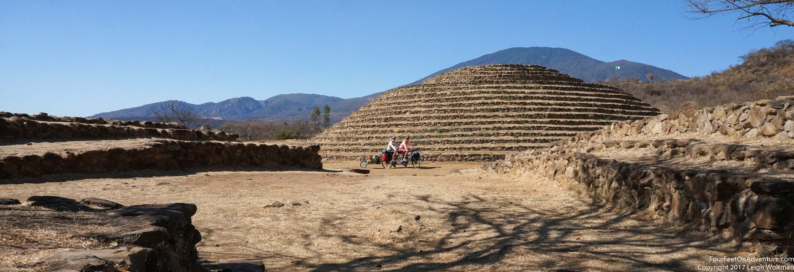

Tepic to Ocotlan
Looking ahead at the elevation profile to Mexico City we knew we had lots of climbing left, but we concluded that the big climbs were out of the way, at least for a little while. Rolling out of Tepic we followed a river which had probably been heavily modified. While treed roads and a bike path followed the channel, it was not a pleasant river stroll. Industrial and human uses of the river had made the water a grey black and the smell was very uninviting. Nevertheless, we had at least a calm start to the cycling day before joining the highway taking us East.
The road followed land that was intensively used for agriculture, rolling hillsides with conic mountains surrounding them that had obviously been volcanoes at some point. Trucks carrying what looked like sugarcane piled high above what seemed safe passed us all day. The train was making its way along the same valley further to our left. At one point, it made such a switchback that the track made an almost complete circle, amazing me that a train could even turn that tight.
Eventually, we came across a flow of volcanic rock as the highway cut through this spill from one of the cones. The stochastic black rock was a great contrast to the drying fields around. We stopped to take some pictures and the black rock showed off how much heat it was generating as it spun up a dust devil that probably lasted close to a minute sending black dust into the air.
We eventually reached Ixtlán del Río where a survey of the hotels found a charming little place with bright colours and generous bathroom for the night. A wedding party was using the motel the next day and people in much fancier clothes than us were coming and going all evening. Looking at the elevation profile for the next day was slightly disappointing. Tomorrow's ride went down into a valley followed by a climb up to the other side.
We started this day with a slight climb under the rising sun, but this turned quickly into our massive downhill. The switchbacks were numerous and the traffic light. The toll highway was taking a different route into the valley, and apparently, all the trucks favoured that route. All the better for us, unless the elevation profile of the toll highway meant we didn't have the climb in front of us. The downhill gave us a thrill and great views as we looked at the valley below, but unfortunately, the plateau was the same height on the other side so we would have to gain all this elevation back in our climb.
The heat increased at the bottom and we started our climb. Hours would pass as we chugged along in our easiest gear, slowly and so painfully scratching back the elevation we had just lost. The toll highway hummed far to our right, it looked like they had the same climb, just in a more straight direction. Even higher, in the mountains above we watched the train negotiate the same valley. Since the valley was too steep for the train to drop into, the track stayed high and wound along the mountains to the south. We watched one train on its whole journey, watching it wind along the steep sides of the mountain and then sometimes losing view of it as it passed through a tunnel.
At one point, we stopped for lunch beside agave plants and noticed cars streaming from our highway down a detour that looked to take them to the toll highway. We knew the section ahead would be busy. Climb and climb we did, until finally, after hours of toiling in the sun. We were up. We had still a little bit of a cycle to go until the next town, but it was oh so every slightly downhill. Most would call it flat, but it gave us encouragement to keep going.
In Magdalena, we stopped in the square, Annette went first to get an ice cream. She came back with a disappointing cup of lemonade. I spied another store, so on my trip, I came back with a triple scoop of chocolate ice cream. The lemonade obviously didn't stack up as Annette had to replicate my success.
In the morning as we were leaving town we met a cyclist from the US. We had a good conversation but the fellow was tired and worn out and you could see his bike trip had come to an end. He was flying out of Guadalajara in a couple days. We instead headed south. Mexico's second largest city might be interesting but we decided we would instead go through Mexico City in the future and therefore didn't need more big city experience.
We moved south, on a route that would take us towards Lake Chapala, Mexico's largest lake. Early in the morning, we were riding along a busy road when a car, dilapidated by even Mexican standards, pulled up beside us and matched our pace. The passenger rolled down the window and started talking to us. We tried but we couldn't make out what he was saying. Eventually, he said follow us and he would turn off at the next gravel road. Probably because of the condition of the car, but we were both skeptical and felt we might be being lured into a trap. We approached cautiously and he got out of the car at the gravel road, uh, oh, this seemed worse now. Eventually, still not able to communicate, he started walking down the road and we followed. We soon saw what he was trying to say, it was a bike path, unlike any we had seen in Mexico. He was just trying to be nice and get us off the busy road. We talked him profusely, and I gave him a handshake, hoping to redeem ourselves.
We rode on our bike path, which was an abandoned railway that had been paved with red pavement. In some spots, they paved between the rails (like over bridges) and we even passed rail stations that had been converted into community pavillions. We loved this and sailed along quietly for several kilometers. Eventually, we had to turn off as the path wasn't going in our direction anymore, but we had to make a convincing argument to ourselves not to modify our trip and just follow this beautiful bike path.
Annette had flagged an archaeological site just off our route. As with most sites, this prehispanic one sat on top of a hill to get a good view of the surrounding land, but that meant a steep climb up for us. When we arrived, the site was actually closed, but that meant we were free to walk around and security was lax enough that we could even take our bike onto the grounds. This site, Guachimontones, featured a rock platform that was circular in shape. The exploration took the rest of the day and we took a hotel for the night. Apparently, a mob boss lived in one of the rooms of our hotel, but I would have preferred if Annette didn't find that out!

We continued on towards Lake Chapala. We had arranged a Warm Showers host in one of the resort areas on the lake, the town of Ajijic. It was great to meet our host, as he lived in a custom designed house that was built on thick adobe walls, and had all glass walls to the outside. He traveled lots, spoke great English and had also done several bike tours. He lived a quiet zen life and we enjoyed being invited to camp on the floor. In the morning, he showed us his business, which is a cactus nursery. The varieties in various stages of growth filled several greenhouses which were quite an amazing spectacle.
From Ajijic, we wanted to head to the eastern end of the lake. According to the maps, there was a small road along the shore of the lake or the main highway that went up into the hills to get around. Our host thought we would be able to make it on the shoreline route so we decided to give it a try. Taking a small route was always a little risky as the road can suddenly end or turn to an impossible path.
Our coastal road started our good, a wide stretch of pavement with just a little climbing. We passed the next coastal town and the still paved road narrowed. As we continued along, we passed another little town and the road narrowed again, our fears might be becoming reality. With each passing town, the road didn't need to sustain as much traffic so less and less money was invested in it. Eventually, it turned to cobblestone with two paved tire tracks in the middle. Each track was just wider than a car tire and allowed a single car to drive down the road without being subjected to the cobbles filling the inside and outside sections of the road. We were able to cruise along on one of the tracks in not too bad form. Coming to another town, we decided to stop and have a snack in the square. Given the condition of the road, it was clear this town didn't get too many visitors. As soon as we stopped the town's children came out to see who we were. Soon we were surrounded by about 40 children all wanting to have a hand on the bike. We tried to convince them not to touch and knock it over, but there was just too many to get the message across to. Feeling like we were covered in flies, we ended up leaving. In this rush, I made a navigational mistake that took us up a steep hill, on the way up on the edge of town, the chain broke. We sat down, as this would have to be the spot for lunch until we got the chain put back together.
Once mended, we headed into town, and took the correct road, following along the cobblestone, first it turned to gravel and we knew our road was fading. But the gravel was somewhat smooth and we continued on. Later on, we came upon construction and found that they were turning this road into the two-track cobblestone. We saw the various stages of construction, first wooden forms setup to hold the two tracks as the concrete set, then sections where guys were mixing concrete by hand, followed by completed sections covered in tarps, followed by men now fitting cobblestones into place of the road and then finally we had to jump out of the way as a dump truck was backing up carrying a load of what must be powered limestone. They then packed this in between their freshly laid cobbles. It all meant for lots of walking and negotiating the bike around active construction.

Once past this section of construction, we had a new road, but then construction started again. Annette walked ahead to see and concluded there was lots more construction. At this junction, we had one more option to go up over the hill we had been avoiding so well and head towards the main highway. The hill was a big climb, the sun was intense, and we laboured up it. The road and the highway to Ocotlan were then typical and we found a hotel to stay in for a couple days. Our room had huge windows, which gave a nice airy feel, but the single pane glass didn't cut much of the city noise.